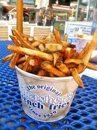
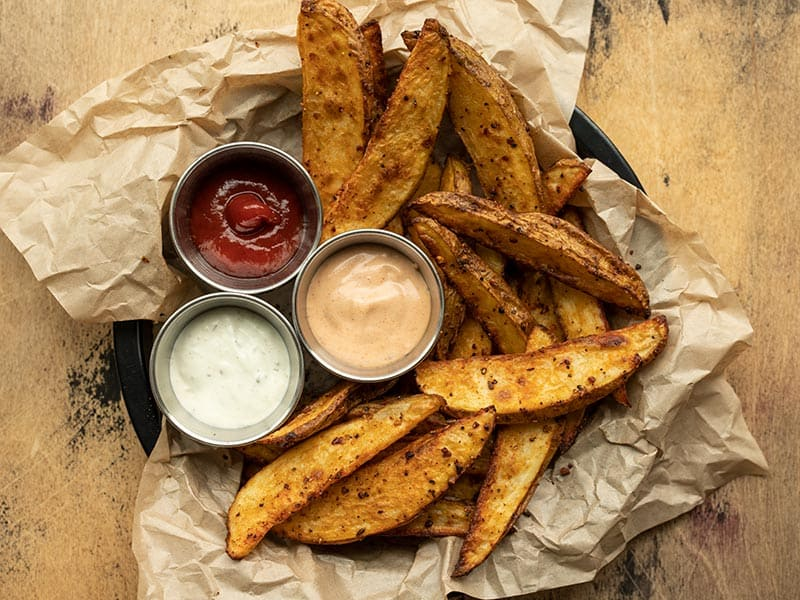
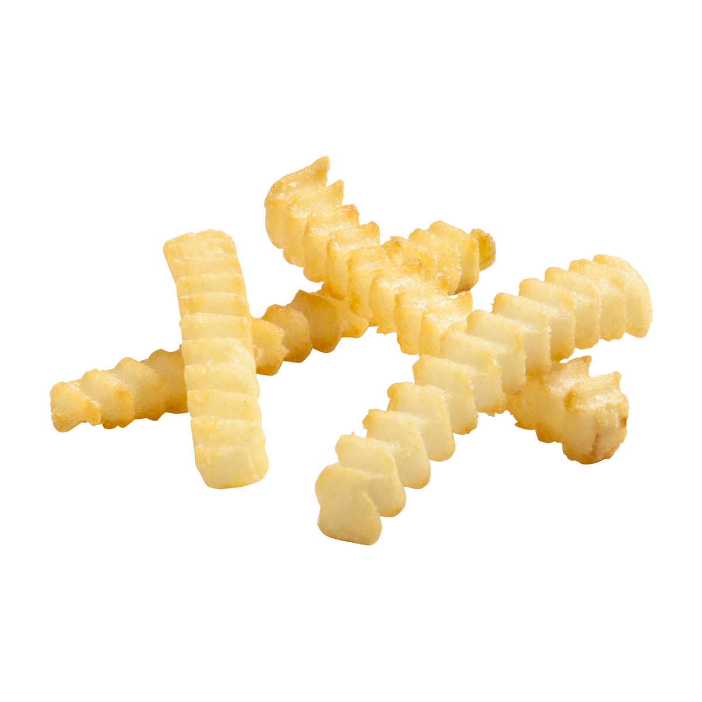

S Tier French Fries

Top of the tierlist is the waffle fry. This variety comes at the top of the pyramid for a few key reasons. The waffle cut fry allows for the optimal ratio of crunchy outside to soft potato inside, while also having the most structural integrity to support thick dips and sauces. The nooks and crannies of a good waffle fry allow for top tier seasoning distribution.
Waffle Fry Score: 11/10 Fry
A Tier French Fries

Next tier down is the humble boardwalk fry. This french fry is best eaten in extremely large quantities at a time, topped with plenty of old bay and vinegar. Some may argue that the need for toppings are a sign that this fry should be lower down the tierlist, but this is mine so they can sod off.
boardwalk fry score: 9/10 fry
B Tier French Fries

The curly fry was a difficult one to place. The novelty of the curly fry is the shape of it-- although it lacks the stability of the waffle fry and does tend to fall apart when handled or dipped. I decided to place this in B tier simply because of the seasoned curly fry, which outpaces the simple seasoned shoestring fry by miles. An unseasoned curly fry is sure to come up short, and could fall down to C or even Crap Tier very quickly.
C Tier French Fries

Personally, too much. Next time just roast the whole potato and call it a day. Though if these are properly crisped and seasoned, they can rival the curly fry for a B-tier placement.
Steak Fry Score: 3/10
Crap Tier French Fries

Bottom of the tierlist is the crinkle cut fry. I don't know what it is about this french fry, but it never ceases to be a disappointment. It doesnt matter how long you put this in your air fryer for, it will always come out a soggy, mealy, underseasoned mess.
Crinkle Cut Fry Score: -10000000/10